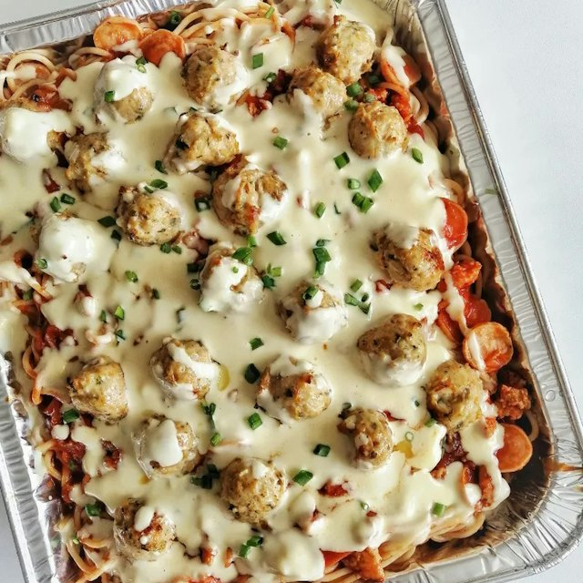
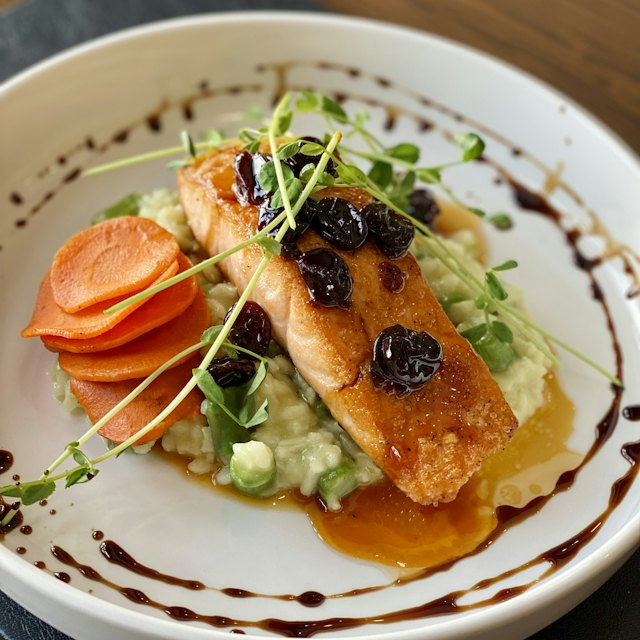
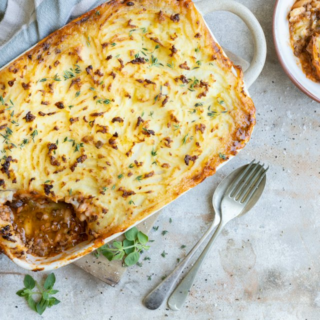
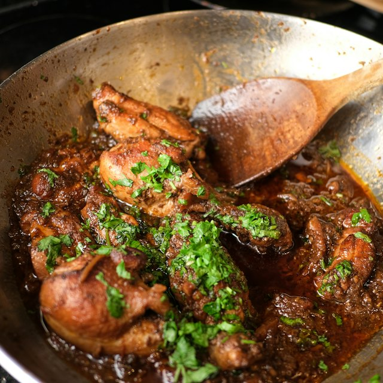
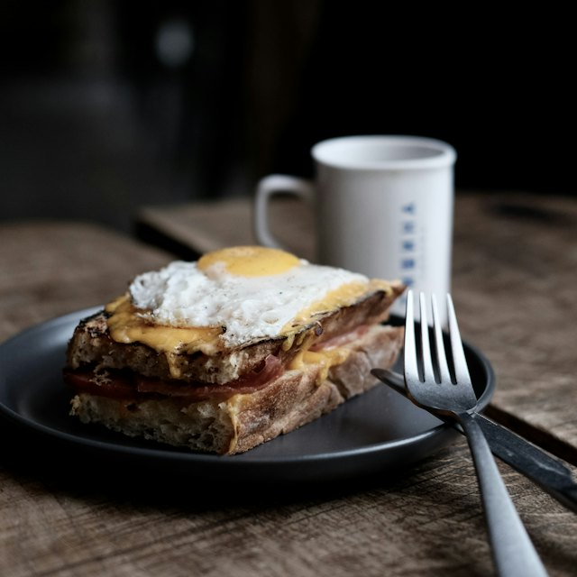
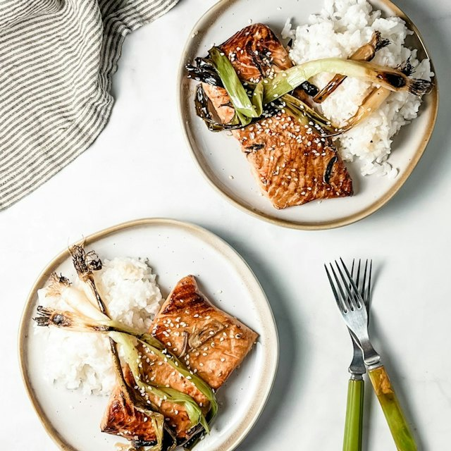
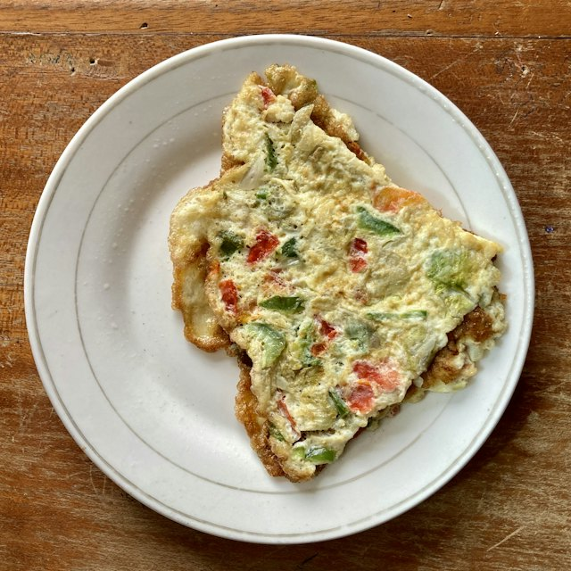
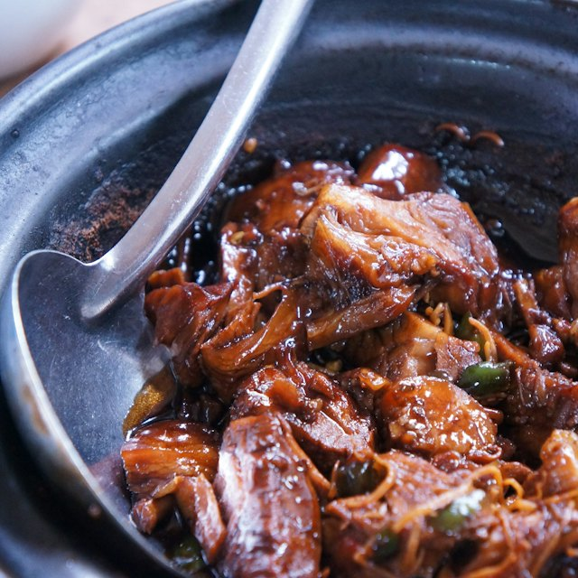
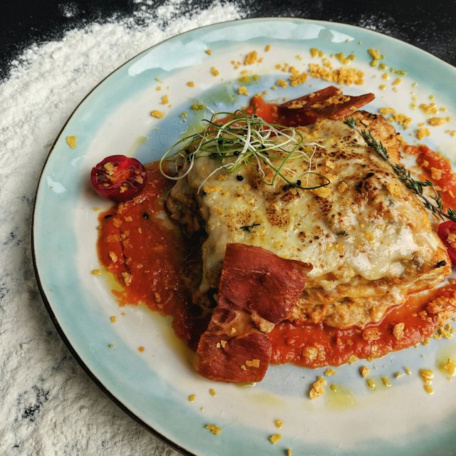
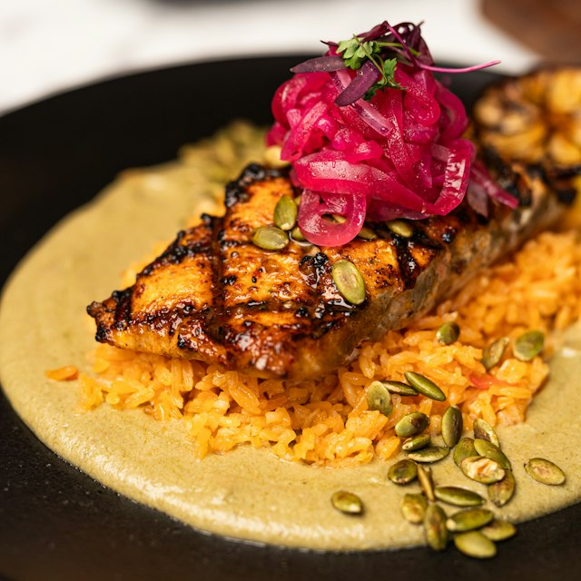

À table, chez vous.
Les bons repas de la semaine, livrés chez vous en une fois.
Un bon plat et son dessert, cuisinés comme chez le traiteur. Vous choisissez combien de repas vous voulez. Vous les rangez au frigo et vous les réchauffez en quelques minutes.
11,99 € le repas, plat et dessert
+ livraison, 15,00 € maximum par semaine
Vous commandez pour un parent ? C'est prévu, voici comment.
Pas à l'aise avec Internet ? et on commande ensemble.
- Une livraison par semaineremise en main propre
- Sans engagementon arrête quand on veut
- Une vraie personneau bout du fil
Comment ça marche
Une barquette, quelques minutes au micro-ondes, et c'est prêt.
Pas de cuisine, pas de vaisselle, pas de recette à suivre.
-
1
Mardile soir
Prenez la barquette du jour
Le jour et le repas sont écrits en gros dessus. Pas d'erreur possible.
-
2
Quelques minutes au micro-ondes
Le temps est écrit sur l'étiquette. Vous retirez le film et vous lancez.
-
3Ding !

À table !
Un plat et son dessert : un vrai repas, chaud, à l'heure qui vous convient.
- Au frigoentre 0 et 4 °C
- Date limiteécrite sur chaque barquette
- Allergènesen gras, en clair
Au menu exemple
Semaine du 9 au 15 novembre 2026
Un plat différent chaque midi et chaque soir, avec son dessert. Tous nos clients reçoivent le même menu : c'est ce qui nous permet de garder ce prix, sans rien jeter.
 Lundi, le midiBlanquette de veau à l'ancienne, rizEn dessert, crème vanille.Lundi, le soirQuiche lorraine, salade verteEn dessert, compote pomme poire.
Lundi, le midiBlanquette de veau à l'ancienne, rizEn dessert, crème vanille.Lundi, le soirQuiche lorraine, salade verteEn dessert, compote pomme poire.
 Mercredi, le midiFilet de colin sauce beurre blanc, puréeEn dessert, riz au lait.
Mercredi, le midiFilet de colin sauce beurre blanc, puréeEn dessert, riz au lait.
Mercredi, le soirHachis parmentierEn dessert, poire au sirop.
 Jeudi, le midiPoulet basquaise, semouleEn dessert, flan pâtissier.
Jeudi, le midiPoulet basquaise, semouleEn dessert, flan pâtissier.
Jeudi, le soirCroque-monsieur, saladeEn dessert, mousse au chocolat.
 Vendredi, le midiSaumon à l'oseille, rizEn dessert, clafoutis aux cerises.
Vendredi, le midiSaumon à l'oseille, rizEn dessert, clafoutis aux cerises.
Vendredi, le soirOmelette aux fines herbes, ratatouilleEn dessert, fromage blanc.


Un seul menu, pour tout le monde
Nous ne faisons pas de version sans sel, diabétique ou mixée. Si votre médecin vous a prescrit un régime strict, notre service n'est pas adapté.
Les ingrédients et les allergènes sont écrits sur chaque barquette. Un doute ? 06 60 68 05 07
Votre commande
Votre prix et votre date en 30 secondes.
Changez les mots en rouge. Vous choisissez le midi, le soir ou les deux, et le nombre de jours. Le prix et la date s'affichent tout de suite.
Touchez une lettre pour choisir vos jours, une assiette pour voir le plat.
Vous recevez 7 repas le jour de livraison. Vous les rangez au frigo et vous réchauffez celui du jour.
La différence
Le plat tout prêt du rayon du supermarché ? Non merci.
Vous avez cuisiné toute votre vie, vous savez ce qui est bon. Une barquette prise au supermarché et mangée sur un coin de table, ce n'est pas un vrai repas.
- Dans la barquette
- Souvent un plat seul, le dessert s'achète à part
- Un plat et son dessert
- Les recettes
- Les mêmes qui reviennent, semaine après semaine
- 14 recettes différentes par semaine : blanquette de veau à l'ancienne, bœuf bourguignon, filet de colin sauce beurre blanc…
- Les courses
- Choisir, payer, porter le sac depuis le magasin
- Livré une fois par semaine, en main propre, rangé au frigo
- Le menu
- Il faut y penser tous les jours
- Le menu de la semaine est déjà fait, le jour est écrit sur la barquette
- La fraîcheur
- Des jours en rayon, puis le trajet jusqu'à chez vous
- Transporté en camion réfrigéré jusqu'à votre porte
Ce qu'on trouve au rayon, selon l'étude de l'association de consommateurs CLCV
- 46 %des plats cuisinés contiennent au moins un additif
- 1 sur 2des plats à base de viande utilise de la viande transformée plutôt que fraîche
- 40 %des plats contiennent des sucres ajoutés
Étude CLCV, mai 2025 : 150 plats cuisinés frais et surgelés relevés dans 10 enseignes. Lire l'étude
Chez nous, la liste des ingrédients est écrite sur chaque barquette. Comparez.
On vous livre ce qu'on servirait à nos parents.

Vous commandez pour un parent
Vous ne pouvez pas passer chaque semaine. Nous, si.
- Vous payez, il reçoit ses repas chez lui.
- Factures par e-mail, tout à distance.
- En main propre, jamais devant la porte.
- Personne n'ouvre ? On l'appelle, puis vous.
À la semaine, ou chaque jour ?
| Resto Pickup | Portage quotidien | |
|---|---|---|
| Heure du repas | Celle de votre parent | Fixée par la tournée |
| À chaque repas | Plat et dessert | Selon le prestataire |
| Passages | 1 par semaine | Jusqu'à 1 par jour |
| Engagement | Aucun | Selon le prestataire |
Pour Noël, pour un anniversaire, pour un retour d'hôpital
Offrez de bons repas à vos parents.
Une carte cadeau de 5, 10 ou 20 repas, valable un an. Vous la recevez tout de suite, à imprimer ou à envoyer. Votre proche commande quand il veut, en ligne ou par téléphone.
Carte cadeau
10 repas
plat et dessert, livrés chez vous
Pour Maman, de la part de Julien
Où nous livrons
Sarthe, Mayenne, Orne : plus de 420 communes.
Le mardi au Mans et dans un rayon de 30 km. Le jeudi autour de Loué et Sablé, jusqu'à Laval, Évron, Mayenne et Alençon.
Touchez une commune. Contours : IGN, Admin Express (geo.api.gouv.fr).
Le Mans et 30 km autourLivré le mardi, 170 communes
Aigné, Allonnes, Ardenay-sur-Mérize, Arnage, Assé-le-Riboul, Avesnes-en-Saosnois, Ballon-Saint Mars, Beaufay, Beaumont-sur-Sarthe, Beillé, Bonnétable, Bouloire, Bouër, Boëssé-le-Sec, Brette-les-Pins, Briosne-lès-Sables, Challes, Champagné, Changé, Château-l'Hermitage, Chérancé, Clermont-Créans, Commerveil, Congé-sur-Orne, Connerré, Coudrecieux, Coulaines, Coulongé, Courcebœufs, Courcemont, Courcival, Courdemanche, Courgains, Dangeul, Dehault, Dollon, Doucelles, Duneau, Fatines, Fresnay-sur-Sarthe, Fyé, Grandchamp, Jauzé, Joué-l'Abbé, Juillé, Jupilles, La Bosse, La Chapelle-Saint-Aubin, La Chapelle-Saint-Rémy, La Fontaine-Saint-Martin, La Guierche, La Milesse, Laigné-Saint-Gervais, Lavaré, Le Breil-sur-Mérize, Le Grand-Lucé, Le Luart, Le Mans, Le Tronchet, Les Mées, Ligron, Lombron, Louvigny, Lucé-sous-Ballon, Maisoncelles, Mansigné, Mareil-sur-Loir, Maresché, Marigné-Laillé, Marolles-les-Braults, Mayet, Meurcé, Moitron-sur-Sarthe, Moncé-en-Belin, Moncé-en-Saosnois, Monhoudou, Montbizot, Montfort-le-Gesnois, Montreuil-le-Henri, Mulsanne, Mézières-sur-Ponthouin, Nauvay, Neuville-sur-Sarthe, Nogent-le-Bernard, Nouans, Nuillé-le-Jalais, Oizé, Parigné-l'Évêque, Parigné-le-Pôlin, Peray, Piacé, Pizieux, Pontvallain, Pruillé-l'Éguillé, Pruillé-le-Chétif, Prévelles, René, Requeil, Rouessé-Fontaine, Rouillon, Rouperroux-le-Coquet, Ruaudin, Saint-Aignan, Saint-Aubin-de-Locquenay, Saint-Aubin-des-Coudrais, Saint-Biez-en-Belin, Saint-Calez-en-Saosnois, Saint-Christophe-du-Jambet, Saint-Corneille, Saint-Cosme-en-Vairais, Saint-Célerin, Saint-Denis-des-Coudrais, Saint-Georges-de-la-Couée, Saint-Georges-du-Bois, Saint-Georges-du-Rosay, Saint-Jean-d'Assé, Saint-Jean-de-la-Motte, Saint-Maixent, Saint-Marceau, Saint-Mars-d'Outillé, Saint-Mars-la-Brière, Saint-Martin-des-Monts, Saint-Michel-de-Chavaignes, Saint-Ouen-de-Mimbré, Saint-Ouen-en-Belin, Saint-Pavace, Saint-Pierre-des-Ormes, Saint-Pierre-du-Lorouër, Saint-Rémy-des-Monts, Saint-Rémy-du-Val, Saint-Saturnin, Saint-Victeur, Saint-Vincent-des-Prés, Saint-Vincent-du-Lorouër, Sainte-Jamme-sur-Sarthe, Saosnes, Sarcé, Sargé-lès-le-Mans, Savigné-l'Évêque, Sceaux-sur-Huisne, Semur-en-Vallon, Sillé-le-Philippe, Souillé, Souligné-sous-Ballon, Soulitré, Spay, Surfonds, Ségrie, Teillé, Teloché, Terrehault, Thoigné, Thoiré-sous-Contensor, Thoiré-sur-Dinan, Thorigné-sur-Dué, Torcé-en-Vallée, Trangé, Tresson, Tuffé Val de la Chéronne, Val-d'Étangson, Val-de-la-Hune, Villaines-la-Gonais, Villaines-sous-Lucé, Vivoin, Vouvray-sur-Huisne, Yvré-l'Évêque, Yvré-le-Pôlin, Écommoy, Écorpain, Étival-lès-le-Mans.
Tout sur la livraison : Le Mans et 30 km autourLoué, Sablé et alentourLivré le jeudi, 107 communes
Amné, Arthezé, Asnières-sur-Vègre, Assé-le-Bérenger, Auvers-le-Hamon, Auvers-sous-Montfaucon, Avessé, Avoise, Bannes, Beaumont-Pied-de-Bœuf, Bernay-Neuvy-en-Champagne, Blandouet-Saint Jean, Bouessay, Bousse, Brains-sur-Gée, Brûlon, Chantenay-Villedieu, Chassillé, Chaufour-Notre-Dame, Chemiré-en-Charnie, Chemiré-le-Gaudin, Chevillé, Chémeré-le-Roi, Conlie, Cossé-en-Champagne, Coulans-sur-Gée, Courcelles-la-Forêt, Courtillers, Crannes-en-Champagne, Crissé, Crosmières, Cures, Cérans-Foulletourte, Degré, Domfront-en-Champagne, Douillet, Dureil, Fay, Fercé-sur-Sarthe, Fillé, Fontenay-sur-Vègre, Guécélard, Joué-en-Charnie, Juigné-sur-Sarthe, La Bazoge, La Chapelle-Saint-Fray, La Quinte, La Suze-sur-Sarthe, Lavardin, Le Bailleul, Le Grez, Longnes, Louailles, Louplande, Loué, Maigné, Malicorne-sur-Sarthe, Mareil-en-Champagne, Montreuil-le-Chétif, Mézeray, Mézières-sous-Lavardin, Neuvillalais, Neuvillette-en-Charnie, Noyen-sur-Sarthe, Parcé-sur-Sarthe, Parennes, Pezé-le-Robert, Pincé, Pirmil, Poillé-sur-Vègre, Précigné, Rouessé-Vassé, Rouez, Roëzé-sur-Sarthe, Ruillé-en-Champagne, Sablé-sur-Sarthe, Saint-Christophe-en-Champagne, Saint-Denis-d'Orques, Saint-Georges-sur-Erve, Saint-Jean-du-Bois, Saint-Loup-du-Dorat, Saint-Léger, Saint-Ouen-en-Champagne, Saint-Pierre-des-Bois, Saint-Pierre-sur-Erve, Saint-Rémy-de-Sillé, Saint-Symphorien, Sainte-Sabine-sur-Longève, Sainte-Suzanne-et-Chammes, Saulges, Sillé-le-Guillaume, Solesmes, Souligné-Flacé, Tassillé, Tassé, Tennie, Thorigné-en-Charnie, Torcé-Viviers-en-Charnie, Val-du-Maine, Vallon-sur-Gée, Vernie, Villaines-sous-Malicorne, Vion, Viré-en-Champagne, Voivres-lès-le-Mans, Voutré, Épineu-le-Chevreuil.
Tout sur la livraison : Loué, Sablé et alentourLaval, Évron, Alençon et alentourLivré le jeudi, 146 communes
Alençon, Alexain, Ancinnes, Andouillé, Argentré, Aron, Arquenay, Arçonnay, Assé-le-Boisne, Averton, Bais, Bazougers, Belgeard, Bierné-les-Villages, Bonchamp-lès-Laval, Boulay-les-Ifs, Bourg-le-Roi, Bouère, Brée, Bérus, Béthon, Cerisé, Champfleur, Champfrémont, Champgenéteux, Champéon, Changé, Charchigné, Chemazé, Chenay, Châlons-du-Maine, Château-Gontier-sur-Mayenne, Châtelain, Chérisay, Commer, Condé-sur-Sarthe, Contest, Coudray, Courcité, Crennes-sur-Fraubée, Cuissai, Damigny, Daon, Entrammes, Forcé, Fromentières, Gennes-Longuefuye, Gesnes, Gesnes-le-Gandelin, Gesvres, Grazay, Grez-en-Bouère, Hambers, Hardanges, Houssay, Héloup, Izé, Javron-les-Chapelles, Jublains, L'Huisserie, La Bazoge-Montpinçon, La Bazouge-de-Chemeré, La Bazouge-des-Alleux, La Bigottière, La Chapelle-Anthenaise, La Chapelle-Rainsouin, La Chapelle-au-Riboul, La Cropte, La Ferrière-Bochard, La Roche-Neuville, Laval, Le Bignon-du-Maine, Le Buret, Le Ham, Le Horps, Le Ribay, Livet, Lonrai, Loupfougères, Louverné, Louvigné, Maisoncelles-du-Maine, Marcillé-la-Ville, Marigné-Peuton, Martigné-sur-Mayenne, Mayenne, Meslay-du-Maine, Mieuxcé, Mont-Saint-Jean, Montflours, Montigné-le-Brillant, Montreuil-Poulay, Montsûrs, Moulay, Moulins-le-Carbonnel, Ménil, Mézangers, Neau, Nuillé-sur-Vicoin, Oisseau-le-Petit, Origné, Pacé, Parigné-sur-Braye, Parné-sur-Roc, Peuton, Placé, Pré-en-Pail-Saint-Samson, Préaux, Quelaines-Saint-Gault, Ravigny, Ruillé-Froid-Fonds, Sacé, Saint-Aubin-du-Désert, Saint-Baudelle, Saint-Brice, Saint-Charles-la-Forêt, Saint-Cyr-en-Pail, Saint-Céneri-le-Gérei, Saint-Denis-d'Anjou, Saint-Denis-du-Maine, Saint-Denis-sur-Sarthon, Saint-Fraimbault-de-Prières, Saint-Georges-le-Fléchard, Saint-Georges-le-Gaultier, Saint-Germain-d'Anxure, Saint-Germain-de-Coulamer, Saint-Germain-du-Corbéis, Saint-Germain-le-Fouilloux, Saint-Jean-sur-Mayenne, Saint-Léonard-des-Bois, Saint-Mars-du-Désert, Saint-Paterne - Le Chevain, Saint-Paul-le-Gaultier, Saint-Pierre-des-Nids, Saint-Thomas-de-Courceriers, Sainte-Gemmes-le-Robert, Sougé-le-Ganelon, Soulgé-sur-Ouette, Souvigné-sur-Sarthe, Trans, Vaiges, Villaines-la-Juhel, Villepail, Villiers-Charlemagne, Vimartin-sur-Orthe, Évron.
Tout sur la livraison : Laval, Évron, Alençon et alentourVotre commune n'y est pas ? Appelez le 06 60 68 05 07 : nous ouvrons de nouvelles communes selon la demande.
La carte
Plat et dessert. Prix des repas, la livraison est en dessous.
- Le repas, plat et dessert11,99 €
- 5 soirs par semainedu lundi au vendredi59,95 €
- Tous les soirs7 repas par semaine83,93 €
- Midi et soir, tous les jours14 repas par semaine167,86 €
- Livraison2,14 € par repas, 6,43 € minimum15,00 € max.
Vous choisissez le midi, le soir ou les deux, de 2 à 7 jours, ou un jour sur deux. Minimum 3 repas par semaine. Sans engagement.
Vos questions
Combien ça coûte ?
11,99 € le repas, plat et dessert. La livraison coûte 2,14 € par repas, avec un minimum de 6,43 € et jamais plus de 15,00 € par semaine, même pour 14 ou 28 repas. Par exemple, 5 soirs par semaine font 70,65 € livraison comprise, et toute la semaine midi et soir 182,86 €. Commande minimum : 3 repas par semaine. Pas de frais d'inscription, pas d'engagement.
Quel jour êtes-vous livré ?
Le mardi au Mans et dans un rayon de 30 km (Ballon, Bonnétable, Connerré, Écommoy, Beaumont-sur-Sarthe…). Le jeudi autour de Loué et Sablé, et en Mayenne et dans l'Orne côté Sarthe : Laval, Évron, Mayenne, Château-Gontier, Meslay, Alençon et leurs alentours. Vous recevez tous les repas de la semaine en une seule fois.
Faut-il être chez soi à la livraison ?
Oui, ou une personne de confiance. Le livreur remet le carton en main propre et ne le laisse jamais devant la porte. Si personne n'ouvre, il vous appelle, puis appelle le proche que vous avez indiqué.
Comment réchauffer les repas ?
Au micro-ondes, en quelques minutes. Le temps est écrit sur l'étiquette. Vous retirez le film et vous lancez : pas de cuisine, pas de vaisselle.
Combien de temps se gardent les repas ?
Chaque barquette porte sa date limite. Rangez-les au frigo dès la livraison et mangez-les dans l'ordre des jours écrits sur l'étiquette.
Peut-on choisir le nombre de repas ?
Oui. Vous choisissez le midi, le soir ou les deux, et les jours qui vous conviennent, à partir de 3 jours par semaine. Vous pouvez changer chaque semaine, avant le samedi.
Peut-on choisir ses plats ?
Non. Tous nos clients reçoivent le même menu, qui change chaque semaine. C'est ce qui nous permet de garder ce prix sans rien jeter. Le menu est publié à l'avance sur cette page.
Faites-vous des menus sans sel, diabétiques ou mixés ?
Nous préférons être clairs : nous ne faisons pas de menus spéciaux. Il n'y a pas de version sans sel, sans sucre ou mixée, tout le monde mange le même menu. Si votre médecin vous a prescrit un régime strict, notre service n'est pas adapté. Pour une alimentation simplement variée et équilibrée, nos plats conviennent. Les ingrédients et les allergènes sont écrits sur chaque barquette.
Comment faire une pause ou arrêter ?
Un appel au 06 60 68 05 07 suffit, ou un clic dans votre espace client, avant le samedi pour la semaine suivante. Sans frais et sans avoir à vous justifier.
Peut-on essayer avant de s'abonner ?
Oui. Cochez « Juste une semaine pour essayer » : vous composez vos repas comme vous voulez, ils sont livrés une seule fois, sans abonnement. Vous continuez seulement si vous aimez.
Puis-je commander pour mon père ou ma mère ?
Oui. Vous choisissez « ma mère », « mon père » ou « un proche » au moment de commander. Vous payez et recevez les factures, votre parent reçoit les repas chez lui.
Comment payer ?
Par carte bancaire ou par prélèvement, chaque semaine. Le paiement est sécurisé par Stripe : nous ne voyons jamais vos coordonnées bancaires. Vous n'êtes pas à l'aise avec Internet ? Demandez à être rappelé : nous faisons la commande avec vous et nous envoyons le lien de paiement par SMS, à vous ou à votre enfant.
Votre première semaine, sans abonnement.
Sept repas du soir, livrés en une fois. Vous continuez si vous aimez.
Essayer une semaine